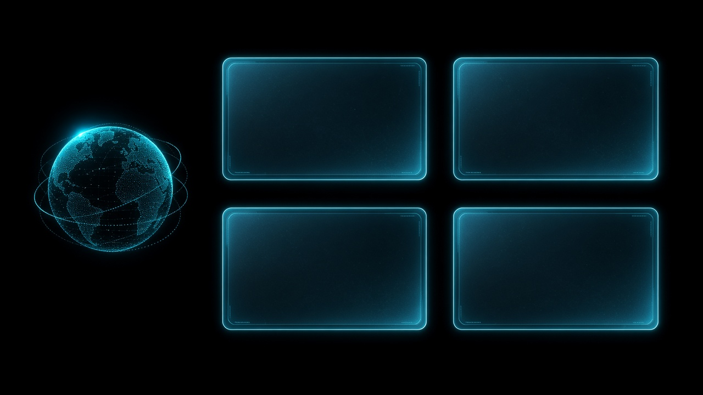
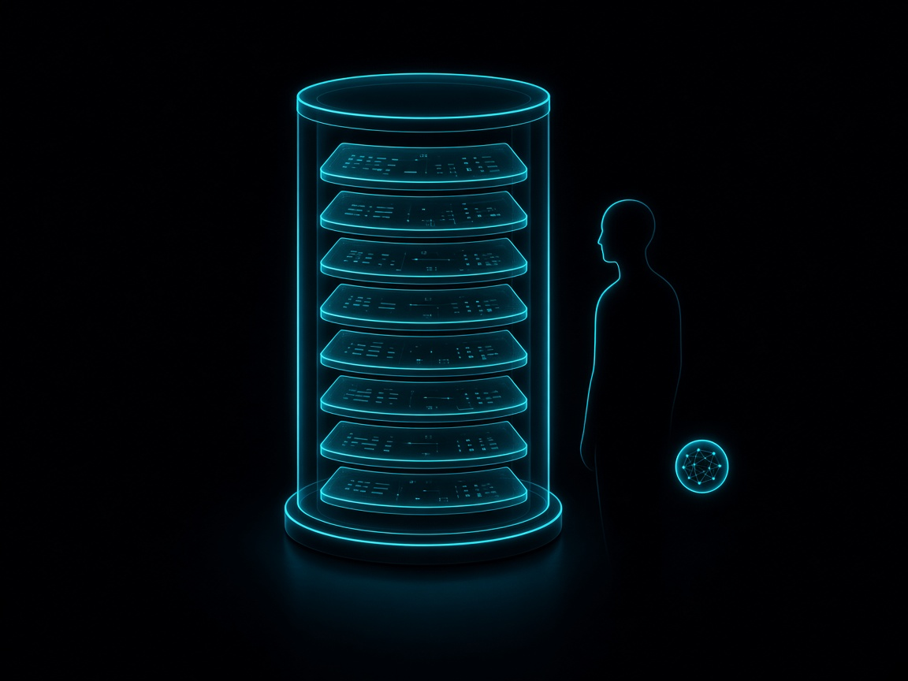
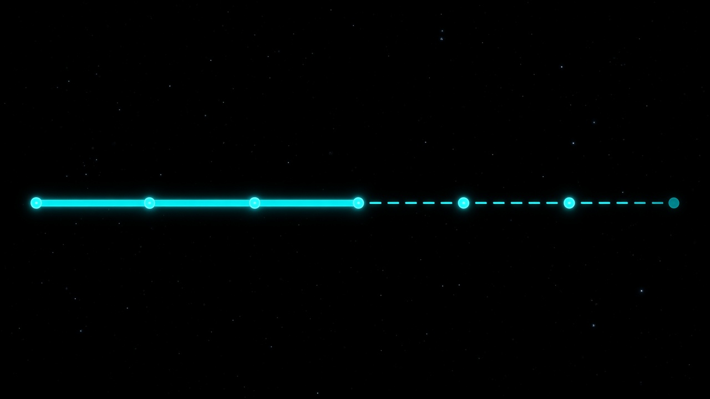

Seminar 1 · Computer Science
An AI command center for Instagram growth
Mohammed Umar Salam
7th Semester · 2026–27
Guide · Department · College
Agenda
The idea
Zeref watches Instagram data, speaks like an operator, and never acts without a human yes.

Why it matters
01
Numbers without a source
02
Talk — can’t see the account
03
Post — no honest brief
04
Score a post — then stop
Research · Agents
Think → use a tool → observe → repeat
Gap: proven on quizzes & games — not a creator’s Instagram account
Every serious agent needs memory
Gap: no rule for “new version must stay safe before it goes live”
Research · Memory & learning
Long-term memory across sessions
Gap: not your Instagram data · not deletable by you · no safety gate
Human feedback makes a better model
Gap: lab training · no rollback · no “don’t post without me”

Research · Instagram
They score a post. They do not run your week — or remember your corrections.
We never compare accuracy across different datasets.
Research · Voice & tools
Hear → think → speak works. End-to-end voice is the research frontier.
Still missing: an audit trail and a memory of your decisions
Models can teach themselves to call calculators, search, calendars.
Still missing: “ask me before you post”
Today’s options
Show numbers
No voice · no confirm
Score a post
Stop after the score
Answer questions
Can’t see your snapshot
Remember chats
Not your Instagram vault
Speak fluently
No publish safety gate
Queue content
No honest brief first
Comparison
Bars show coverage of the need — not a shared accuracy contest.
Research gap
Tools · memory · feedback · engagement
One snapshot · deleteable vault · version that stays safe
Build that room — then make Jarvis smarter from your yes
Smarter only if it still cannot act without you.
Gap → response
From tools research
Already running
From MemGPT
Next horizon
From InstructGPT
Promote only if safe
From engagement papers
Run the whole week
Motivation
Corrections get forgotten
Each paper solves one layer
Creators need one room
Eight months left to finish
Problem statement
Creators lack one system that reads their Instagram honestly, remembers what they confirmed, and never posts without a yes.
Traction
About 80% of the college demo scope — plus live data past that demo.
Roadmap

Objectives
Close
Approve the full scope:
finish the command center,
then give Jarvis a vault —
so it gets smarter only from what you confirm.
It already runs. It will remember your yes. It will not act without you.
References
[1] Yao et al. — ReAct — ICLR 2023
[2] Wang et al. — LLM agents survey — 2024
[3] Packer et al. — MemGPT — 2023
[4] Ouyang et al. — InstructGPT — NeurIPS 2022
[5] Tricomi et al. — Instagram engagement — WebSci 2023
[6] Son & Park — OTA Instagram features — 2023
[7] Cui et al. — Speech language models survey — 2024
[8] Schick et al. — Toolformer — NeurIPS 2023